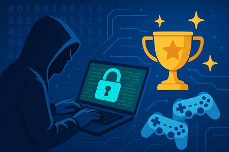
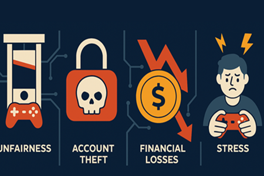
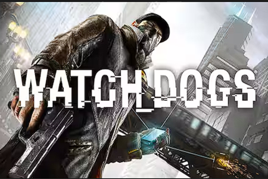
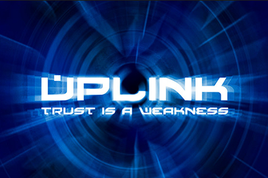

긍정적 영향

해킹은 게임 산업에 있어 부정적 영향이 압도적으로 크지만, 동시에 보안 강화와 기술 발전 등 긍정적 영향도 상존합니다. 해킹은
게임 산업에 보안 기술 발전과 윤리 의식 강화라는 역설적 효과를 낳았습니다. 따라서 해킹은 단순한 범죄 행위가 아니라
게임 생태계의 약점을 드러내고 성장의 촉매제 역할을 하는 양면성을 가집니다.
1. 보안 강화 촉진: 해킹 시도는 게임사의 취약점을 드러내는 계기가 됩니다. 이를 통해 게임사들은 보안 시스템을 강화하고,
해킹 방지 기술을 개발하게 됩니다. 결과적으로 게임 산업 전반의 보안 수준이 향상됩니다.
2. 기술 발전 촉진: 해킹은 새로운 보안 기술과 암호화 기법 개발을 촉진합니다. 게임사들은 해킹에 대응하기 위해 최신 보안 기술을 도입하고,
이를 통해 게임 산업의 기술 수준이 전반적으로 향상됩니다.
3. 커뮤니티 활성화: 해킹 관련 논의는 게임 커뮤니티 내에서 활발한 토론과 정보 공유를 촉진합니다. 이를 통해 게이머들은 보안 의식을 높이고,
해킹에 대한 경각심을 갖게 됩니다.
4. 윤리적, 법적 인식 제고: 해킹 사건은 유저들에게 디지털 윤리와 법적 책임에 대한 인식을 높이는 계기가 됩니다.
게임사들도 해킹 방지를 위한 법적 조치를 강화하게 됩니다.
5. 학습 기회 제공: 일부 해커들은 윤리적 해킹(화이트 해킹)을 통해 보안 취약점을 발견하고 이를 게임사에 알리는 역할을 합니다.
이는 게임사들이 보안 강화를 위한 학습 기회를 제공하며, 해킹에 대한 긍정적 인식을 형성하는 데 기여합니다.
부정적 영향

해킹은 게임 산업과 이용자 모두에게 심각한 부정적 영향을 끼칩니다. 해킹은 단순한 치트 행위가 아니라 게임 생태계 전체를 위협하는
구조적 문제입니다. 따라서 강력한 보안 시스템, 계정 보호, 법적 대응이 동시에 이루어져야 합니다.
1. 공정성 붕괴: 각종 핵(Hack)과 치트툴은 정상적인 경쟁을 무너뜨려 유저들의 몰입감과 재미를 크게 감소시킵니다. 이는 게임의 본질적인 가치를
훼손합니다.
2. 게임 수명 단축: 해킹으로 인한 불법 복제와 계정 탈취는 게임사의 수익을 감소시키고, 이는 게임 개발 및 유지보수에 부정적인 영향을 미쳐
게임 수명을 단축시킵니다.
3. 보안 위협 확대: 해킹은 게임사의 서버와 데이터베이스에 대한 보안 위협을 증가시킵니다. 이는 유저 개인정보 유출, 게임 데이터 손상 등 심각한 문제를 야기할 수 있습니다.
4. 사회적 문제: 해킹 문화가 확산되면 청소년에게 부정적 영향을 주고, 불법 행위에 대한 윤리적 기준을 흐리게 합니다. 폭력적 게임과 결합될 경우
공격성 증가, 사회성 저하 등 부정적 영향을 미칠 수 있습니다.
5. 산업 신뢰도 저하: 해킹 사건이 빈번해지면 게임 산업 전반에 대한 신뢰도가 하락할 수 있습니다. 이는 투자 감소, 이용자 이탈 등으로 이어져
산업 전반에 부정적인 영향을 미칩니다.
Game 'Watch Dogs'

'Watch Dogs' 시리즈는 해킹을 핵심 게임 메커니즘으로 삼아, 디지털 사회의 권력 구조와 개인을 자유를 추구하는 오픈월드 액션 게임입니다. 단순한
기술이 아닌 플레이어의 선택과 전략을 결정하는 도구로 가능하며, 게임의 몰입도와 사회적 메시지를 동시에 전달합니다.
[해킹 요소]
1. 게임 개요: 'Watch Dogs'는 오픈월드 액션 어드벤처 게임으로, 플레이어는 해커인 주인공 에이든 피어스를 조작하여
디지털 도시 시카고에서 다양한 임무를 수행합니다. 해킹은 게임의 핵심 메커니즘으로, 플레이어는 도시의 인프라를 해킹하여 적을 제압하고 정보를 수집합니다.
2. 해킹 메커니즘: 스마트폰 하나로 교통 신호, CCTV, ATM, 드론, 차량 등을 해킹 가능합니다. 적의 통신을 차단하거나, 감시망을 우회하는 등
다양한 전략적 활용이 가능합니다.
3. 게임플레이 다양성: 잠입, 전투, 퍼즐, 미션 수행 방식에서 해킹이 중심이 되며, 플레이어의 선택에 따라 결과가 달라집니다.
[해킹의 상징성과 의의]
1. 디지털 사회 비판: 감시 사회, 개인정보 침해, 기술 권력의 남용 등 현대 사회의 문제를 게임 내 해킹을 통해 드러냅니다.
2. 자유와 통제의 경계: 해킹은 플레이어에게 자유를 주지만, 동시에 시스템에 대한 의존성과 통제의 위험성을 상징합니다.
3. 현실 반영: 실제 해킹 기술과 보안 문제를 기반으로 구성되어, 게임을 통해 사이버 윤리와 보안 의식을 환기시킵니다.
4. 문화적 영향력: 해커를 영웅으로 재해석하며, 기술과 저항의 상징으로 자리매김 합니다. 이는 젊은 세대에게 기술의 사회적 역할을 고민하게 만듭니다.
Game 'Uplink'

'Uplink'는 해킹 시뮬레이션 게임으로, 플레이어가 프리랜서 해커가 되어 다양한 임무를 수행하며 기술과 전략을 발전시키는 구조를 가집니다. 해킹의 기본 원리와
긴장감을 게임 속에 효과적으로 녹여내며, 디지털 사회의 윤리와 보안 문제를 상징적으로 탐구합니다.
[해킹 요소]
1. 현실적 요소 반영: '바운싱(중계 서버 경유)', 로그 삭제, 흔적 지우기 등 실제 해킹의 핵심 요소를 반영합니다.
2. 몰입감: 해킹 실패 시 경찰에 체포되는 설정, 로그 추적 시스템 등으로 긴장감을 극대화합니다.
3. 문화적 배경: Hackers,WarGames 등 해킹 영화의 분위기를 재현하며, 해커 문화에 대한 대중적 관심을 높였습니다.
[해킹의 상징성과 의의]
1. 윤리적 고민 유도: 불법적 의뢰 수행과 시스템 침입을 반복하면서, 플레이어는 해커의 윤리와 책임에 대하여 고민하게 됩니다.
2. 기술적 이해도 향상: 해킹의 기본 원리와 전략적 사고를 게임을 통해 자연스럽게 익힐 수 있습니다.
3. 인디 게임의 가능성: 단순한 UI와 텍스트 기반 인터페이스에도 불구하고 높은 몰입도와 중독성을 보여주며, 인디 게임의 창의성을 입증한 사례입니다.